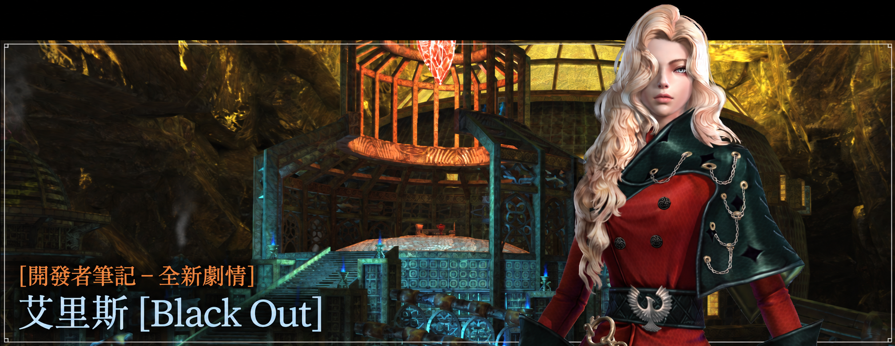
DEVELOPER'S NOTE · BLACK OUT
艾里斯全新劇情
BLACKOUT 詳細內容
劇情、招募角色、地下研究棟、每週任務與全新裝備系統。
韓版開發資訊，並非 SEA 已實裝內容。
觀看 BLACKOUT 繁中預告專題 →大家好，我是開發團隊的 적단。
這次的開發者筆記，將向各位介紹即將更新的艾里斯第三篇章 [Black Out]，以及一同登場的全新招募角色與遊戲內容。
在 [Dead End] 中，開拓家族為了追捕杜魯門而深入島嶼地下，卻只能在緊閉的研究棟大門前折返。那扇門的另一邊究竟有什麼，大家都很好奇吧？
那麼，現在就一起來看看吧！
回顧 Dead End
杜魯門的暴行在領主辦公室中曝光。然而，杜魯門早已不知去向，向女王請求的處置命令，也在約定的時間過後仍未送達島上。
最後，雷歐娜決定「先行處置，再向上稟報」，開拓家族也沿著藏在辦公室裡的祕密通道，開始追蹤杜魯門的行蹤。
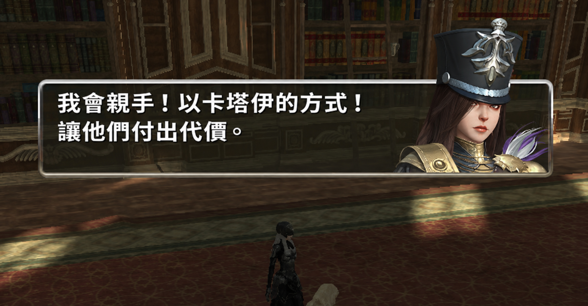
在路上再次遇見的，是卡塔伊的執政官卡蜜兒。
她正處理那些被杜魯門改造成機械士兵的卡塔伊國民，並宣告要「以卡塔伊的方式」，讓造成這一切的人付出代價。
追尋失蹤軍團的去向，開拓家族來到島嶼地下。這裡原本是艾里斯為了抵禦海盜而建造、後來遭到廢棄的巨大軍工廠。
就在開拓家族與軍團副隊長克莉絲緹娜一同突破機神群、繼續前進時，一個不知是人類還是機械的人偶出現在眼前。在隨後趕來的蒂奧內勸阻下，那個名叫普羅迪的人偶退去了。
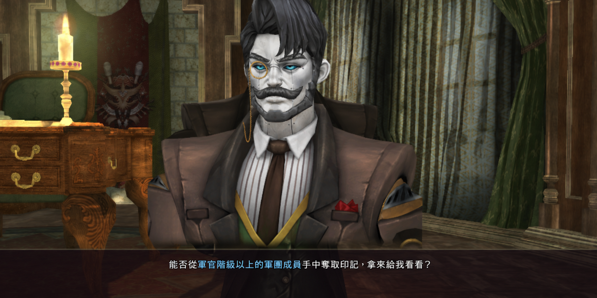
之後，開拓家族再次調查辦公室，喚醒了被遺棄在那裡的老舊機械——納伊巴克。
他原本是公爵的管家，卻被杜魯門改造成機械。他告知眾人瑙特公爵仍然活著，並要求以軍團軍官的印記，交換進入地下所需的通行認證裝置。
然而，在尋找印記的途中，曾經並肩作戰的克莉絲緹娜，卻與身分不明的女子「代號 C」聯手，背叛了開拓家族。
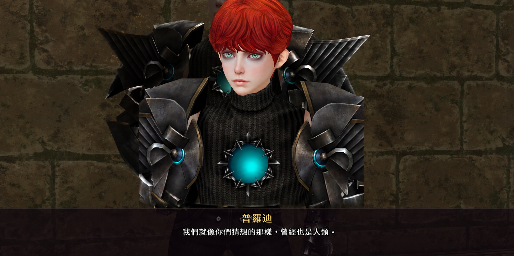
勉強逃到地下廢棄場後，開拓家族再次遇見普羅迪與蒂奧內。兩個孩子說出了島上失蹤孩童的去向，也坦白了一個駭人的真相：他們自己也曾經是人類。
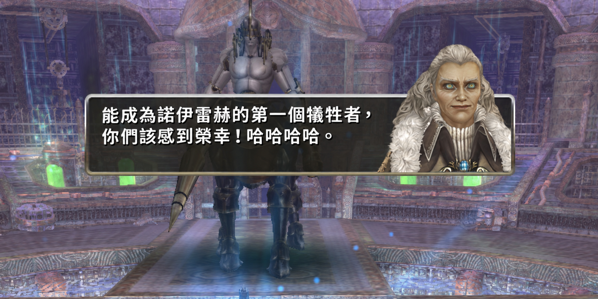
接著，沿著杜魯門的蹤跡抵達的競技場，竟是一間沒有出口的死路。在那裡等待眾人的，是杜魯門的「傑作」諾伊雷赫。在佛利斯帝雅狙擊手艾麗的幫助下，開拓家族勉強逃出生天，終於取得印記，回到納伊巴克身邊。
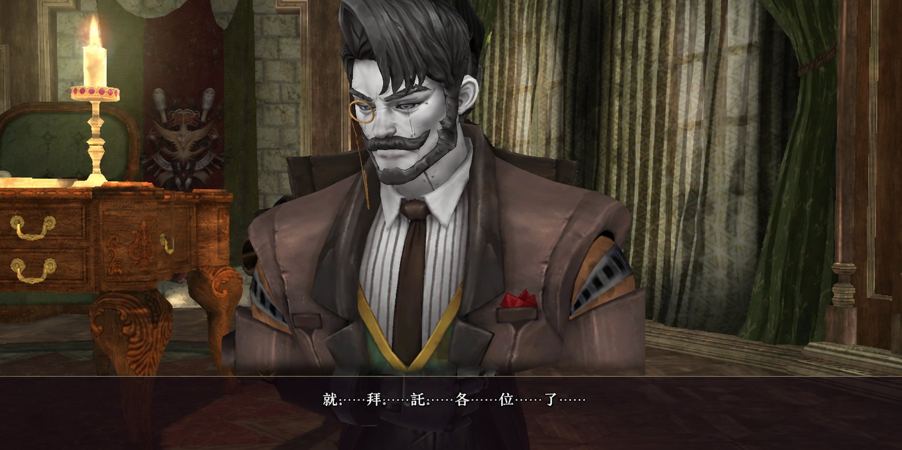
納伊巴克從自己的身軀中拆下核心，交出通行認證裝置，留下託付公爵的話語後，便停止了運作。
杜魯門最終仍未落網，開拓家族手中只剩下一個需要修復的通行認證裝置。
緊閉的地下研究棟大門前——我們的第二段艾里斯旅程，就在這裡畫下了句點。
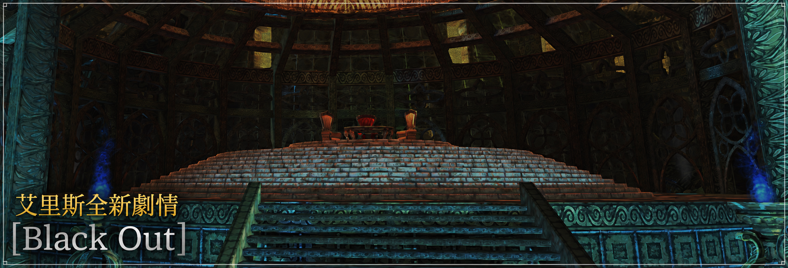
全新劇情 Black Out
「我們被困在這座沒有出口的迷宮裡。」
費盡心力修復納伊巴克留下的「通行認證裝置」後，開拓家族終於踏入艾里斯地下研究棟。
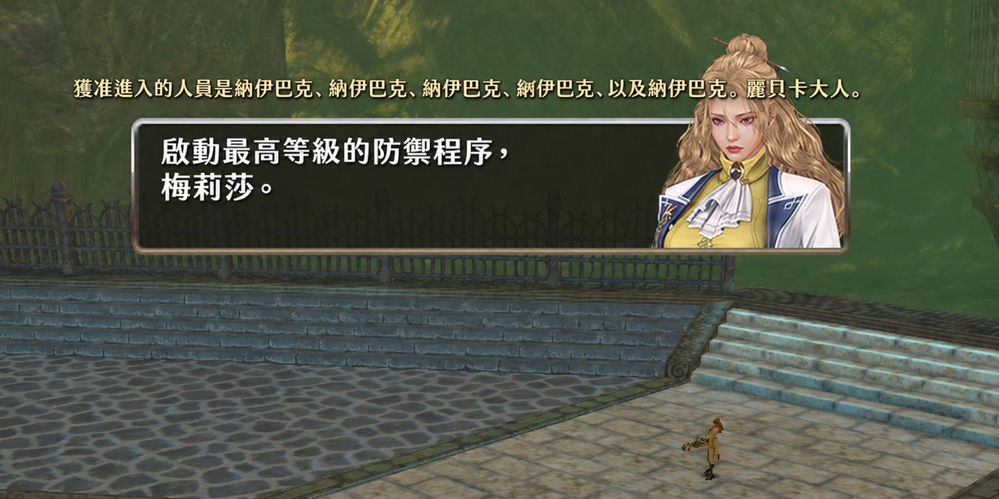
然而，原本安靜得不尋常的研究棟，突然啟動了最高等級的 [防禦程序]，地下所有照明隨之熄滅。在電磁砲轟擊與維多爾接連襲來的黑暗之中，究竟誰能為眾人打開這條死路？
還有那位指揮這一切的女性。在杜魯門的研究棟裡等待開拓家族的她，究竟是誰呢？👀
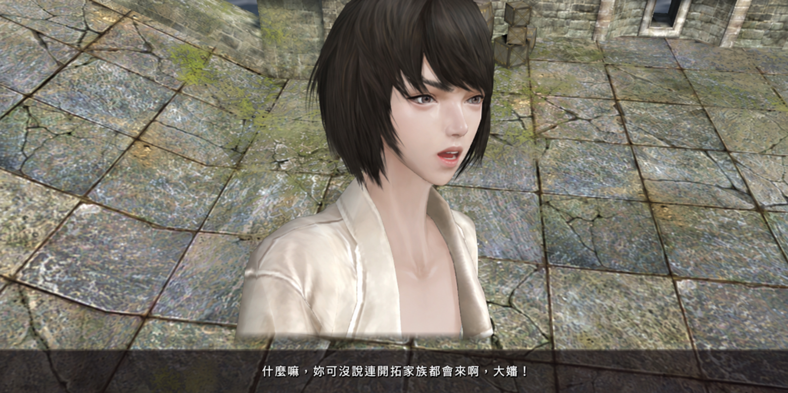
應該待在新大陸的瑪爾切提，怎麼會出現在這裡……？！
意想不到的面孔，還不只如此。
就連一直在艾里斯繼續研究的姐姐貝羅尼普，也將與他相遇……
這對久別重逢的鍊金術師姐弟，真的能迎來令人欣喜的團聚嗎？
研究棟中，那些長久以來籠罩在謎團中的人物，其真實身分將逐一揭曉；故事也將離開艾里斯，再次延伸至新大陸。
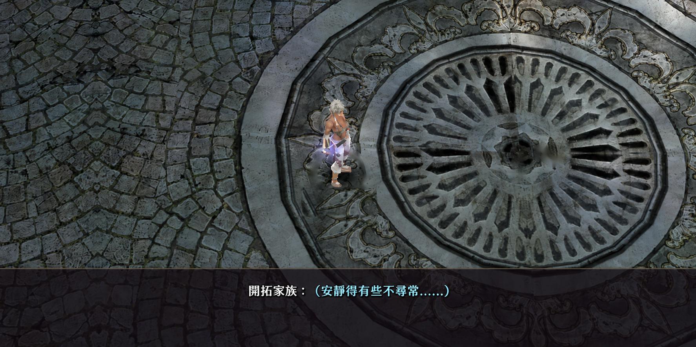
不過，久違地回到立普圖衛，卻總覺得哪裡不太對勁。
以往總會迎接開拓家族的熟悉面孔，竟然一個也看不見……
睽違已久的新大陸，究竟有什麼在等待開拓家族？就請各位親自確認吧！😁
已完成 [Dead End] 的家族，只要進入城鎮，就能立即開始 [Black Out]。
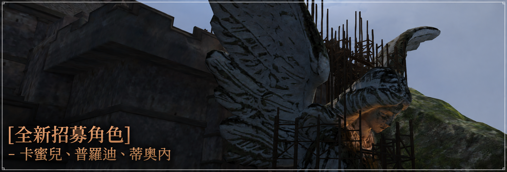
全新招募角色
在 [Black Out] 中，曾於 [Dead End] 結緣的卡塔伊執政官，以及被遺棄在地下的兩個杜魯門人偶，都能成為開拓家族的一員。
卡塔伊執政官——卡蜜兒
「做不到的事，就讓它成真！父親常說的這句話，就是我的信念！」
少女年幼時，雙親遭盜賊殺害；在被販賣為奴的途中又遇上風浪，漂流到卡塔伊海岸。她在貧民窟中勉強度日，直到巴爾坎家族收留她，將她收為養女。
在家人的關愛下，她逐漸展現出政治家的才能。然而，十五歲的某一天，卡蜜兒的養父遭刺客殺害。她查出那名刺客正是當年殺害親生父母的盜賊之一，於是親手剿滅了那群盜賊，從此在卡塔伊聲名大噪。
之後，她先成為巴爾坎家族的家主，年紀輕輕便出任卡塔伊執政官。為了不讓卡塔伊市民遭受自己曾經歷的創傷，她持續強化傭兵團。而當義利埃與卡塔伊之間開始瀰漫戰爭的氣息時，她也悄悄地為那場戰爭做起準備……

卡塔伊執政官卡蜜兒・巴爾坎，首次在 [Powder Keg] 中與開拓家族相遇，並於 [Dead End] 中，與副官哈司・拉伯德一同和開拓家族攜手合作。
她總是將真心藏在若無其事的玩笑背後，凡事以卡塔伊為優先。無論何時，她都不曾放下「執政官」這個身分。
然而，在這次的 [Black Out] 中，卡蜜兒主動向開拓家族伸出手。這次，她並非以卡塔伊執政官的身分，而是以「一個人」的身分提出請求。
在陷入黑暗的地下研究棟裡，她究竟遇見了什麼？那條無法以執政官之名抵達的道路，又將通往何方？
進行 [Black Out] 的「衝突」任務，即可與卡蜜兒相遇！
杜魯門的機械化人偶——普羅迪與蒂奧內
「我是人類。嗯，至少……我是這麼認為的。」
蒙托羅死後，杜魯門始終無法製造出擁有魔力的機械，於是以改造凱文與米莎所取得的成果為基礎，決定直接利用人類的魔力。他綁架了島上擁有純淨魔力的孩子，展開新的實驗，最終製造出以魔力強化肉體的普羅迪，以及將魔力向外釋放的蒂奧內。
然而，兩個孩子無法控制增幅後的魔力，一睜開眼就撲向自己的創造者。最終，他們被杜魯門制伏，丟進了地下深處的廢棄場。
在那座等待焚燒的巨大坑洞中，普羅迪幸運地存活下來。不久後，他發現了同樣被扔進來的蒂奧內，並將她留在身邊照顧……

曾在 [Dead End] 中以野外中型 BOSS 身分登場的兩個孩子，終於要成為各位能夠操作的角色了！
在 [Dead End] 中彼此守護的兩人，這次卻將以截然不同的模樣出現在開拓家族面前。在陷入黑暗的地下研究棟角落，眾人只找到了損壞後獨自留下的普羅迪，而一直陪伴在他身旁的蒂奧內，卻遍尋不著。

完成 [Black Out] 的「同床異夢」任務後，即可開始招募任務 [人偶的夢想]，招募普羅迪與蒂奧內。分離的兩個孩子能否再次相見，就請各位一同見證吧！
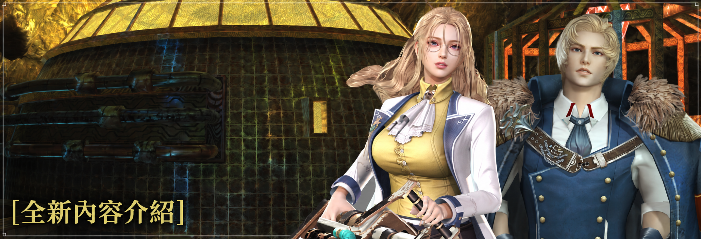
艾里斯地下研究棟
「雖然只是非常、非常小的一部分，參觀過我的研究室後，感想如何？」
在那「一小部分」之外，島嶼地下深處、從未有人踏足的研究設施，終於將在本次 [Black Out] 中揭開面貌。
艾里斯地下——研究棟

可經由 [艾里斯，地下正門] 進入 [艾里斯，地下研究棟]。從五角形中央大廳向外延伸的通道，連接著四座巨大的圓形實驗場。那些實驗場，看起來就像是為了「測試」某種東西而打造的舞臺。

遍布這座寬廣研究棟的，是杜魯門實驗後遺棄的 [失敗的人偶]。其中有揮拳攻擊的 Type.A，以及使用踢擊的 Type.L，這兩種類型在研究棟各處徘徊。
研究棟的主人——機神
隨著擊倒人偶、時間流逝，將人類改造成機神的實驗中，那些「成功」的個體——機神，便會甦醒。它們的情感與記憶已被抹去，只會服從命令，就像電磁砲與諾伊雷赫一樣，是單純為了殺戮而製造的存在。

[艾里斯，地下研究棟] 將成為取得新裝備相關重要道具的地點，敬請期待。
野外團隊討伐——塞爾維托爾
其實，地下研究棟並不只有一層，還有另一個用於團隊討伐的樓層。當 [塞爾維托爾] 出現時，即可從 [艾里斯，地下正門] 進入該樓層。

外型宛如巨大城塞的 [塞爾維托爾]，也將提供新裝備相關的重要道具，敬請各位期待。
全新每週任務
完成 [Black Out] 尾聲的家族，可挑戰以地下研究棟為舞臺的兩種每週任務。
確保機械化人偶
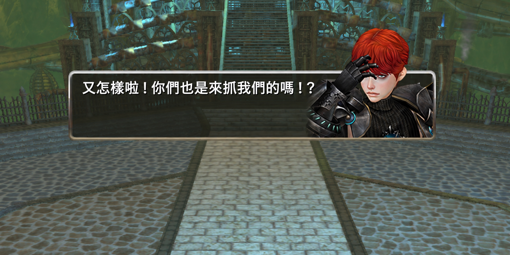
多方勢力為了奪取留在艾里斯地下的普羅迪與蒂奧內而蜂擁而至。[確保機械化人偶] 是一項防守任務，必須守護無法離開原地的兩個人偶直到最後。只要其中任何一人倒下或被帶走，任務就會失敗。

起初，遭遺棄的「失敗的人偶」會接連湧出；接著，血腥海軍的海克托會率領精銳部隊闖入。最後，卡塔伊的兩人會親自前來帶走孩子，必須以強力攻勢阻止他們。如果讓海克托逃走，這兩人就會以更強大的狀態登場。
解除防禦程序
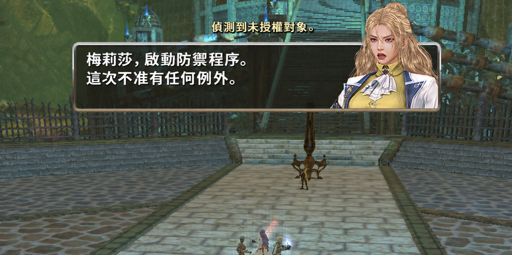
地下研究棟再次啟動 [防禦程序]。熄燈的研究棟裡，電磁砲不斷轟擊，維多爾也在黑暗中伺機攻擊開拓家族。逐一破壞維持程序運作的緊急魔力充能站，就能讓照明一點一點恢復。

不過，這些砲擊並不區分敵我。將維多爾引到砲擊地點，就能一口氣解決它們。最後一座充能站前，受到程序保護的麗貝卡正等待著開拓家族。
完成「[Black Out] 尾聲－星星的使者與審判者」任務後，可透過艾里斯地下的電梯啟動裝置進入，每週可通關一次。
任務獎勵包含新防具的製作材料「伊奈克斯核心」、三種「塗層凝膠」，以及「宗師魔法晶片」、5 大元素飾品材料結晶體、三種古代姿勢祕笈（古代雷電、古代光線、古代守護）等。
伊奈克斯空靈防具
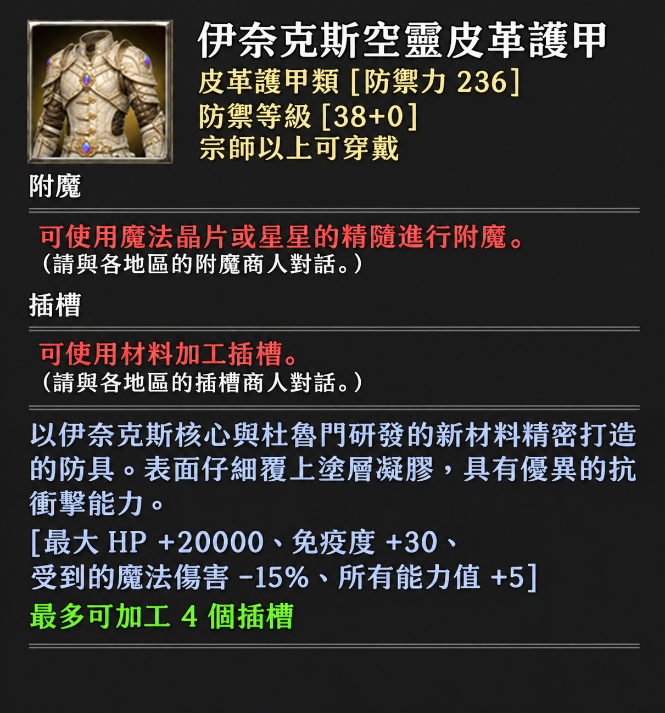
這是以伊奈克斯核心，以及杜魯門研發的新材料為基礎，精密打造而成的防具。
伊奈克斯空靈防具不需要另外準備製作書，可直接透過 NPC 麗貝卡，使用新每週任務及塞爾維托爾團隊討伐所取得的材料製作。
裝備飾品
隨著伊奈克斯空靈防具登場，全新的裝備系統「裝備飾品」也將一同加入。
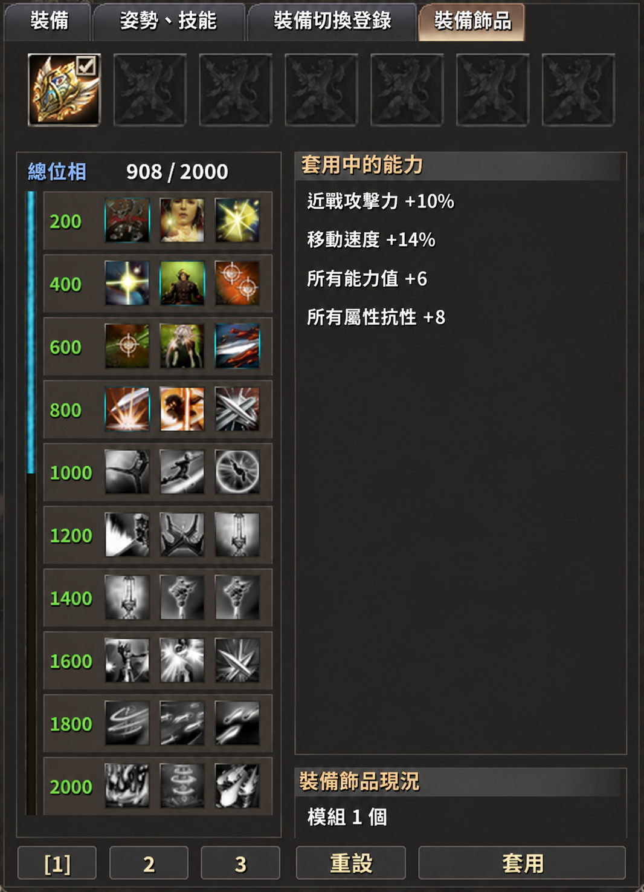
※ 畫面仍在開發中，圖示與能力選項可能有所變更。
可在角色資訊視窗的 [裝備飾品] 分頁中裝配裝備飾品。每種支援裝配的裝備，會套用一個已裝配的裝備飾品。
除了裝備飾品本身之外，包含伊奈克斯裝備在內、達到一定等級以上的裝備，也會依強化數值提供相應的位相；透過裝備飾品的調律，還能取得更高的位相。
累積的位相每達到一定數值，就能從提供的能力中選擇一項。每個階段都備有三種能力可供選擇，包括攻擊力、貫穿力、免疫度、增益效果、種族追加傷害等；隨著階段提高，可選擇的能力也會更加多樣。
在非戰鬥狀態下，隨時都能變更能力選擇。各位可以依不同情況挑選需要的能力，或載入事先儲存的預設組合。
伊奈克斯空靈裝備可裝配名為「模組」的裝備飾品；「模組」可透過新每週任務獎勵取得。
各位覺得艾里斯的第三段故事 [Black Out] 如何呢？
我們會在陷入黑暗的地下研究棟裡，等待各位開拓家族的到來。天氣逐漸轉涼，請小心別感冒了；我們下次開發者筆記再見。
謝謝大家。